People have been using secret codes for thousands of years.
So it is surprising that in 1976, Whitfield Diffie and Martin
Hellman at Stanford University discovered a major new conceptual
approach to encryption and decryption: public-key
cryptography.
Cryptographic systems are typically based on ciphers (i.e., codes) that use keys for encryption and decryption. In traditional ciphers, the so-called symmetric ciphers, the key used to encrypt a message is also the key that decrypts the message. As a consequence, if you know how to encrypt messages with a particular key then you can easily decrypt messages that were encrypted with that key.
Diffie and Hellman's insight was to realize that there are cryptographic systems for which knowing the encryption key gives no help in decrypting messages. This is of immense importance. In traditional cryptographic systems, someone can send you coded messages only if the two of you share a secret key. Since anyone who learns that key would be able to decrypt the messages, keys must be carefully guarded and transmitted only under tight security. In Diffie and Hellman's system, you can tell your encryption key, or public key to anyone who wants to send you messages, and not worry about key security at all. For even if everyone in the world knew your public key, no one could decrypt messages sent to you without knowing some additional secret information, which you keep private to yourself. Diffie and Hellman called such a system a public-key cryptography system.
The public-key system we will investigate in this problem set is based on the method of Diffie-Hellman key agreement, which Hal described in lecture on February 10. This is a method by which two people can construct a shared secret that will be known only to the two of them, even though all the communication between them is public.
Recall the basic idea from lecture: If Alyssa and Ben wish to
communicate they agree (in public) on a large prime number p
and a number g which is a generator for p. (For g to be a
generator means that the powers 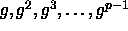, taken
modulo p, produce all the integers 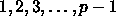, in some
order.)
they agree (in public) on a large prime number p
and a number g which is a generator for p. (For g to be a
generator means that the powers 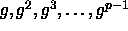, taken
modulo p, produce all the integers 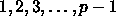, in some
order.)
Alyssa picks a secret number x and computes  .
. Ben
picks a secret number and computes 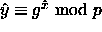. Alyssa sends Ben y, and Ben sends Alyssa . Alyssa now
computes 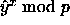 and Ben computes 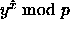.
But these are the same number because
Ben
picks a secret number and computes 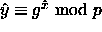. Alyssa sends Ben y, and Ben sends Alyssa . Alyssa now
computes 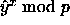 and Ben computes 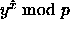.
But these are the same number because
Now that Alyssa and Ben have this shared number, call it K, they can use K as a key for sending and receiving messages using some ordinary symmetric cipher.
The essential point is that all communications between Alyssa and Ben could be public, and an eavesdropper would still not know K and so could not decrypt the messages. All the eavesdropper would know is p, g, y, and . If p is a large prime, there is no efficient way to use these to compute K.
Suppose Alyssa wants to set up a system that allows anyone in the world to send her an encrypted message that only she can decrypt. She can do this with a small variation of the secret-sharing scheme above.
Just as above, Alyssa picks a prime p, a generator g, and a secret number x, and she computes 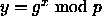. She keeps x secret to herself and publishes the values (p,g,y). These published values form Alyssa's public key.
Suppose now that Ben (or anyone) wants to send Alyssa an encrypted message. He gets Alyssa's public key, which has the values of p, g, and y. Next he picks his own number . From this, he computes 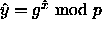, and he also computes 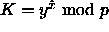. Ben uses K as the key for encrypting the message to Alyssa using some symmetric algorithm. He sends the encrypted text to Alyssa, along with .
When Alyssa receives an encrypted message, she takes the part that came with it, and computes 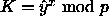. (Remember: Alyssa, and only Alyssa, knows x.) She now uses K as the key for decrypting the message. Other people who see the message can't decrypt it: They know p, g, y and , but they can't compute K from this without knowing either x or .
This method of public-key encryption is known as ElGamal key
agreement The method is also sometimes called
half-certified Diffie-Hellman. ``Half-certified'' here refers to the
fact that Ben can be sure that he is sending a message to Alyssa (or
to whomever published that key). Alyssa, however, has no idea who
really sent her the message, since anyone in the world can see her
public key.
The method is also sometimes called
half-certified Diffie-Hellman. ``Half-certified'' here refers to the
fact that Ben can be sure that he is sending a message to Alyssa (or
to whomever published that key). Alyssa, however, has no idea who
really sent her the message, since anyone in the world can see her
public key.
Our main tools for implementing encryption and decryption are computing primes and doing fast modular exponentiation as in section 1.2.6 of the textbook.
We have the procedure that computes a power of a number modulo another number:
(define (expmod b e m)
(cond ((zero? e) 1)
((even? e)
(modulo (square (expmod b (/ e 2) m)) m))
(else
(modulo (* b (expmod b (-1+ e) m)) m))))
We also have the Fermat test:
(define (fermat-test n)
(let ((a (choose-random n)))
(= (expmod a n n) a)))
(define (fast-prime? n times)
(cond ((= times 0) true)
((fermat-test n) (fast-prime? n (- times 1)))
(else false)))
To generate a prime, we pick a random value with a specified number of digits and start testing successive odd numbers from there until we find a prime. We'll consider a number to be prime if it passes two rounds of the Fermat test.
(define (choose-prime digits)
(let ((range (expt 10 (- digits 1))))
;;start with some number between range and 10*range
(let ((start (+ range (choose-random (* 9 range)))))
(search-for-prime (if (even? start) (+ start 1) start)))))
(define (search-for-prime guess)
(if (fast-prime? guess 2)
guess
(search-for-prime (+ guess 2))))
The procedure choose-random used here takes an arbitrary integer n and returns a number chosen at random between 2 and n-2, inclusive. Picking random numbers in this range will be useful for several of the procedures in this problem set.
Unfortunately, it's not enough just to find a prime. We also have to
find a generator for the prime. Finding a generator for an arbitrary
prime can be complicated, but there is a certain kind of prime for
which it is easy. These are so-called safe primes. A safe
prime is a prime number p of the form 2q+1 where q is also
prime. The following theorem lets us compute generators for safe
primes:
We can use these ideas as follows:
Given the above procedures, arranging to do encryption and decryption is straightforward. Let's call the list of four numbers--p, g, x, and y--a key system. The public part of this, namely, p, g, and y, we'll call a public key.
The following procedure constructs a key system according to the method described above: pick a safe prime p, pick a generator g, pick a random number x, and compute 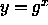 modulo p:
(define (generate-key-system digits)
(let ((p (choose-safe-prime digits)))
(let ((g (find-generator p)))
(let ((x (choose-random p))) ;x will be secret
(let ((y (expmod g x p))) ;y will be public
(make-key-system p g x y))))))
The argument here specifies the number of digits (minus 1) for the
prime.
The procedure make-key-system in the final line of the procedure is an example of a data constructor. All it does is package the four numbers together into a structure called a list. Once a key system has been constructed, we can select the individual pieces using data selectors: key-system-p, key-system-g, key-system-x, and key-system-y. These constructors and selectors are all very simple procedures. In this problem set we've defined all necessary constructors and selectors for you, so you don't have to think about them much. We'll discuss constructors and selectors in lecture on February 19th.
Once we have a key system, we can extract the public parts to form the corresponding public key.
(define (key-system->public-key key-system)
(make-public-key (key-system-p key-system)
(key-system-g key-system)
(key-system-y key-system)))
Here make-public-key is another data abstraction we have provided for you, with selectors public-key-p, public-key-g, and public-key-y.
The final element we need in order to implement ElGamal public-key
encryption is a symmetric cipher, which will use the shared key to
encrypt and decrypt. For this problem set, we've provided procedures
symmetric-encrypt and symmetric-decrypt.
Symmetric-encrypt takes a text string message and a numeric key, and
encrypts the message using the key to produce a cipher-text. Given
the cipher-text and the same key, symmetric-decrypt will recover
the message text.
For example,
(symmetric-encrypt "My little secret" 87) ;Value: "\234b\bJ6\025\205\r\253\271'\031/\213\264\v" (symmetric-decrypt "\234b\bJ6\025\205\r\253\271'\031/\213\264\v" 87) ;Value: "My little secret"
The weird backslash numbers in the cipher-text are Scheme's way of printing character codes that do not correspond directly to printable characters. (Our cipher produces 8-bit bytes, not all of which are printable characters.)
Putting this all together, given a message together with Alyssa's public key, we encrypt the message as described above. Namely, we pick a random value for (not to be confused with the x of Alyssa's key system, which only Alyssa knows), use Alyssa's y raised to the th power modulo p as the shared key for the symmetric cipher, and send the result together with 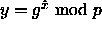.
(define (encrypt message-text public-key)
(let ((p (public-key-p public-key))
(g (public-key-g public-key))
(y (public-key-y public-key)))
(let ((my-x (choose-random p)))
(make-encrypted-message
(expmod g my-x p)
(symmetric-encrypt message-text (expmod y my-x p))))))
The procedure make-encrypted-message is another data constructor. The associated selectors that retrieve the two pieces are encrypted-message-y and encrypted-message-cipher-text.
We'll leave it to you to implement the corresponding decrypt procedure, which takes an encrypted message and a key system, and returns the decrypted ciphertext (provided that the key system is the correct one).
Suppose someone wants to decrypt a message not intended for them.
Suppose this someone is the kind of someone who happens to have
massive computational power available to devote to the
problem. They have to start with the public key of the
recipient and recover the secret number x. That is, given p, g,
and y they must find the number x such that
They have to start with the public key of the
recipient and recover the secret number x. That is, given p, g,
and y they must find the number x such that  . This
is called the discrete log problem.
. This
is called the discrete log problem.
How does one compute discrete logs? One way is simply brute-force search: Try all the values for x between 2 and p-2 until you find the one that works. Unfortunately for our ``someone,'' the computational burden here is vast. Remember that if we use successive squaring, the time required to raise a number to a power up to p has order of growth , i.e., grows as the number of digits of p. But to scan all the numbers less than p has order of growth 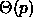. Each time you add one more digit to your prime, you increase the computation for cracking discrete logs by a factor of 10, while you increase the computation required to do encryption and decryption by only a little bit.
Are there better algorithms than brute force search? Yes, but they
don't help a whole lot. There's a method called Pohlig's rho
algorithm which has order of growth 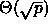, but this is
still exponential in the number of digits in p. The fastest
algorithm known is called the number-field sieve, and it has
order of growth
which is not quite exponential in the number of digits, but still
grows pretty damned fast.